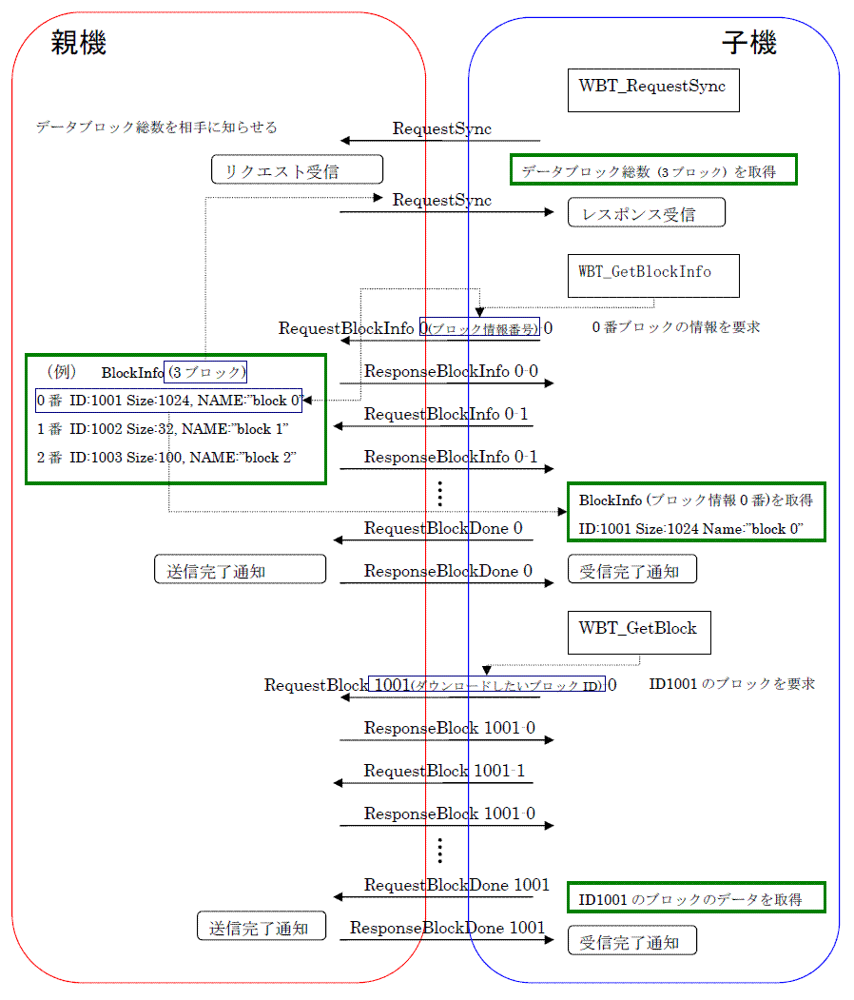
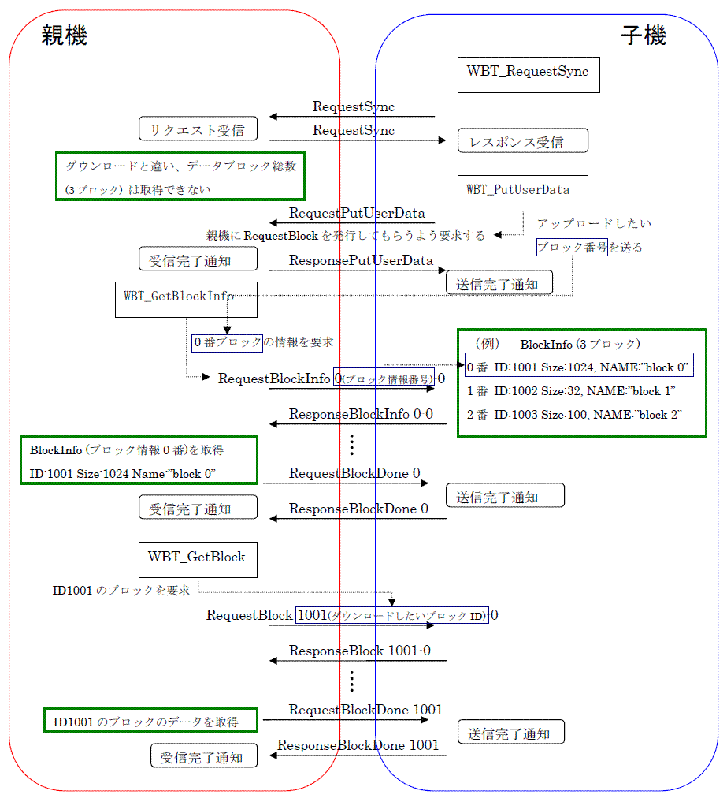

WBTを使用した際のダウンロード、及びアップロード時のパケットの流れを、以下に図として示します。
(注意)親子間では半二重通信なのでアップロード、ダウンロードが同時に発生した場合は子機側からみてアップロードが優先されます。
ダウンロード時のパケットの流れ
ダウンロード時に親子間でやり取りされるパケットの流れについて図で示します。

アップロード時のパケットの流れ
処理の流れは基本的にダウンロードの処理が親子反転しただけですが、
アップロードは、親機にダウンロードをしてもらわなければいけないので、子機はアップロードしたいタイミングで親機へ
WBT_PutUserData を用いてブロック情報を送って知らせる必要があります。
（もし、アップロードするタイミングが RequestSync 後すぐであり、アップロードするブロックも固定であるなら、
RequestSync の受信コールバックで WBT_GetBlockInfo を呼び出してもかまいません。）
アップロード時に親子間でやり取りされるパケットの流れについて図で示します。

2006/03/13 初版